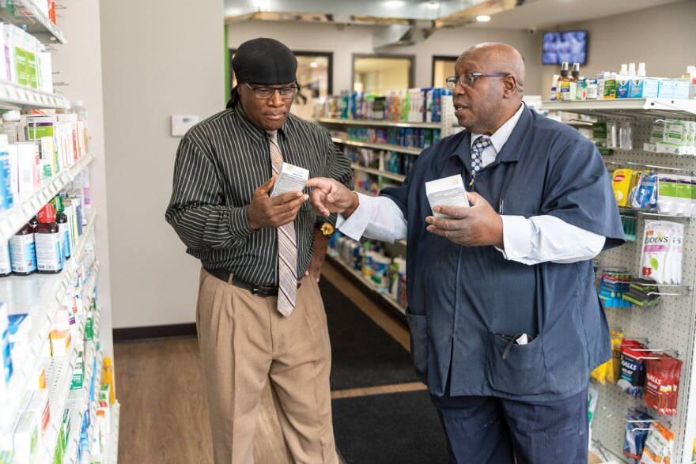

The goal of pharmacy is to guarantee that pharmaceuticals are used in a safe, efficient, and cost-effective manner. Pharmacy is the science and practice of discovering, producing, preparing, dispensing, reviewing, and monitoring medications.
It connects health sciences with pharmaceutical sciences and natural sciences, making it a diverse field of study. Since pharmaceutical corporations currently produce the majority of the pharmaceuticals, professional practice is shifting toward a clinical focus. Pharmacy practice is divided into two categories: community pharmacy and institutional pharmacy.
The pharmacists are normally the ones who prescribe the drugs in order for the doctors to check and approve.The range of pharmacy profession includes more conventional tasks like pharmaceutical manufacturing and dispensing. Additionally, it contains more up-to-date medical services like clinical services, assessing prescriptions for safety and efficacy, and giving out pharmacological information. The major health care providers who maximize the use of medication for the benefit of patients are pharmacists, who are experts in drug therapy.
Here are some of the advantages of being a pharmacist 
Being a pharmacist doesn't just mean making drugs; you can start a business it makes you earn profit business-wise. Pharmacists are also involved in drug research and development, drug safety and quality control, and public health initiatives. They work closely with other healthcare professionals to improve patient outcomes and ensure that medications are used safely and effectively. Overall, being a pharmacist is a highly rewarding and challenging career that involves a broad range of responsibilities beyond just making drugs. Pharmacists have the opportunity to make a significant impact on the lives of their patients and contribute to the advancement of healthcare as a whole.